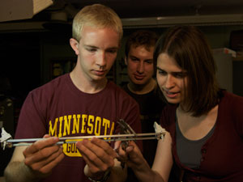

<%method title>Undergraduate Programs Overview</%method>
<p>
There are two undergraduate programs: a physics program and an astrophysics program.
</p>
<table border="0">
<tr>
    <td>
        <table border="0" style="width:300px; padding-left: 10%; padding-right: 10%;">
            <tr><td>
                <a href="physics"></a>
            </td></tr>
            <tr><td>Physics undergraduates in a teaching lab. </td></tr>
            <tr><td><h2><a href="physics">Physics Undergraduate Program</a></h2></td></tr>
        </table>
    </td>
    <td>
        <table border="0" style="width:300px;">
            <tr><td>
                <a href="http://www.astro.umn.edu"></a>
            </td></tr>
            <tr><td>Astronomy undergraduates with a telescope.</td></tr>
            <tr><td><h2><a href="http://www.astro.umn.edu/undergrad/">Astrophysics Undergraduate Program</a></td></tr>
        </table>
    </td>
</tr>
</table>
